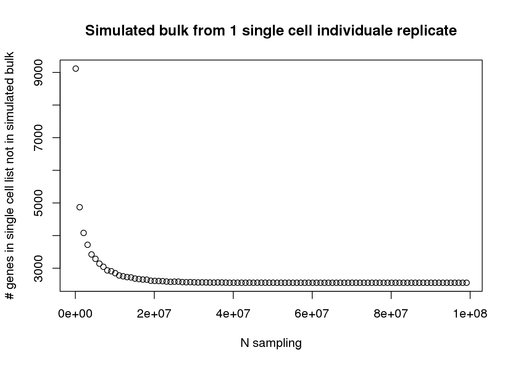

Last updated: 2017-02-16
Code version: 4c2c032
library("biomaRt")
library("data.table")
library("testit")
library("dplyr")
library("edgeR")
library("VennDiagram")
library("ggplot2")
theme_set(theme_bw(base_size = 12))
source("../../singleCellSeq/analysis/functions.R")anno <- read.table("../../singleCellSeq/data/annotation.txt", header = TRUE,
stringsAsFactors = FALSE)
#input molecule (pre-filter)
molecules <- read.table("../../singleCellSeq/data/molecules.txt", header = TRUE,
stringsAsFactors = FALSE)
reads_bulk <- read.table("../../singleCellSeq/data/reads-bulk.txt", header = TRUE, stringsAsFactors = FALSE)Create gene lists:
genes_observed_reads_bulk <- rownames(reads_bulk)[rowSums(reads_bulk) > 0]
genes_observed_molecules <- rownames(molecules)[rowSums(molecules) > 0]molecules_1ind<- molecules[,1:96]
molecules_pool <- data.frame(apply(molecules_1ind, 1 , sum))
colnames(molecules_pool) <- c("pool_count")
#i need a vector containing each of the genes the number of times they appear in the sum for sampling (pooled_molecules)pooled_molecules <- c()
for (row in rownames(molecules_pool)){
which_row <- rownames(molecules_pool) == row
num = rep(row, times= molecules_pool[which_row,])
pooled_molecules <- c(pooled_molecules, num)
}I will make a function that samples the gene vector N times and creates a list of the unique gene names in the sample. It will then see how many genes are in the genes_observed_molecules but not in this “simulated” bulk. (sample no replacement)
subsample_func <- function(N){
#subsample with replacement
subsample_pool <- sample(pooled_molecules, N, replace=TRUE)
#make list of unique genes in sample
unique_subsample_pool <- unique(subsample_pool)
#list of gene in genes_observed_molecules that arnt in unique list (call it only_sc)
only_sc <- setdiff(genes_observed_molecules, unique_subsample_pool)
return(length(only_sc))
}using a multinomial approach
# not_in_simbulk<- sapply(N_samples, function(x) {
# subsample_genes <- rmultinom(n = x, size = length(molecules_pool$pool_count),
# prob = molecules_pool$pool_count)
# unique_subsample_pool <- rownames(molecules_pool)[rowSums(subsample_genes)>0]
# #list of gene in genes_observed_molecules that arnt in unique list (call it only_sc)
# only_sc <- length(setdiff(genes_observed_molecules, unique_subsample_pool))
# return(only_sc)
# })I will run my function at a bunch of different N values and plot the returned value against the sample size N.
N_samples <-seq(100000, 100000000, by = 1000000)
not_in_simbulk<- sapply(N_samples, function(x) subsample_func(x))
plot(not_in_simbulk ~ N_samples, main="Simulated bulk from 1 single cell individuale replicate", xlab="N sampling", ylab = "# genes in single cell list not in simulated bulk") 
This site was created with R Markdown